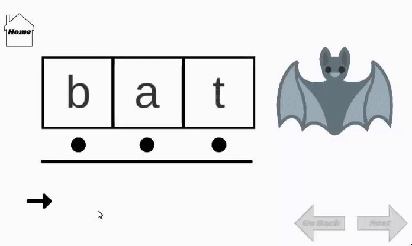
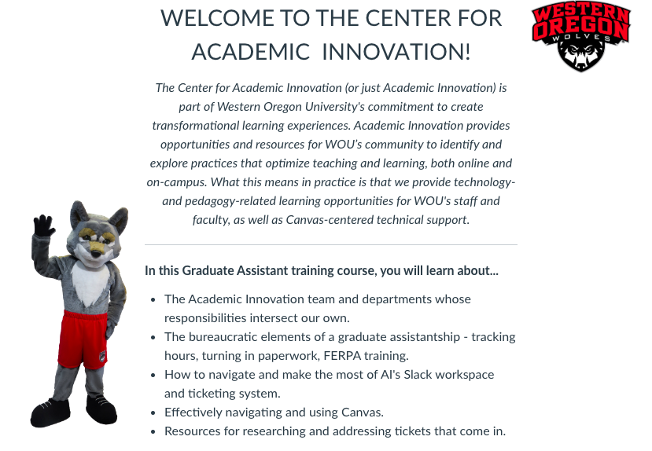

2.1 Learner
Educators continually improve their practice by learning from and with others and exploring proven and promising practices that leverage technology to improve student learning. Educators:
After applying different pedagological approaches such as Gestalt Theories and other methodologies based in instructional design, this Food Passport was made to showcase the different restaurants within Bend, Oregon within their distinct neighborhoods to guide readers to the best eateries within the town. Careful thought was put into selecting color palette, images, and text so that the artifact is readable, informational, and engaging.
Flick's Bug Off Poster
Utilizing instructional design frameworks such as ADDIE as a workflow base to apply other pedagogical approaches and intertwine knowledge gained within CSE 626, such as Gestalt Theory and other basic principles of design, this flyer was created. The goal of this particular artifact was to target audience members within the Nintendo community that play Animal Crossing: New Horizons and inform them of the latest upcoming in-game event. After analyzing the different ways in which Nintendo had announced the event to the gamer community, this flyer was designed and developed to further inform the gamer community. Design decisions made for the poster focused on the reduction of cognitive overload while also being detailed and informative, as well as engaging.
An Introduction to Copy Right, CC, Fair Use, and Public Domain
This artifact was created during CSE 624 as a way to give readers an introduction to key concepts within the licensing world. By applying the basic principles of design and the principles of andragogy and effective teaching methods, this resource for designers was created. The resource highlights the importance of copyrighting, creative commons, fair use, and public domain and gives different real life scenarios where these ideas have relevance and tangible connections to the eyes of readers. These scenarios base in reality helps to encourage readers to form connections that directly apply to their own background and experiences.
Persuasive Dialogue: Artificial Intelligence Past, Present, and Future
This persuasive piece explores the concept of artificial intelligence and how we as a society have yet to scaffold education and progress that lead artificial intelligence towards success. Much research has yet to be done to not only resolve issues in artificial intelligence, but also to help the world become more at ease with the capabilities AI has to offer. Recent literature has been reviewed to develop concepts discussed in this write up to help expand upon this idea, as well as brainstorm possible solutions to help society as a whole move towards supporting AI. This deep dive into artificial intelligence is meant to give insight on the distortion of artificial intelligence and how we as a society are not actively pushing more awareness on what artificial intelligence really is and how it can be utilized as a tool within education. Throughout the discussion, there is a primary focus in educating the reader about the downfalls of the curriculum not having an up to date lens on artificial intelligence and how the lack of proper adjustments to consider these innovations may impact our future and how we are able to further develop the technology we have to properly serve us with more strength in the future. The paper is a great resource to give those who’re newly within the field of technology an introduction on the history of these innovative developments, where we are as a society, and how we should move forward. This discussion not only has the potential to jumpstart an educator or an individual within the technology world a starting point to understand the controversial arguments that are occuring within the industry, but also give them a direction towards some of the avenues of artificial intelligence that can be dug into a bit deeper.
Reading List: Communication Theory & Understanding How to Implement Best Design Practices
This reading list introduces several articles that help designers to understand the definition of user interface and user experience, as well as highlighting the different principles and guidelines that revolve around how to create content specifically designed with the user in mind. This list of resources not only gives an introduction to all of these moving pieces that are involved in design, but also provides resources while diving deeper into certain topics that content creators should focus on to reach organizational goals.
Reading List: Introduction to Unity
In this paper, I took the time to research what games and tools have been made through the engine in the past to help me better understand the benefits of creating educational games in Unity. This paper reflects upon several academic articles and resources that focus on the utilization of Unity to make educational based tools or games.
2.2 Leader
Educators seek out opportunities for leadership to support student empowerment and success and to improve teaching and learning. Educators:
Transparency in Learning and Teaching Workshop
After closely collaborating with the Center for Academic Innovation and reviewing goals of the different workshops already established, as well as investigating the potential needs for professional development for educators, TILT came to fruition to emphasizes empowerment in the learning experiences within the Canvas learning space. TILT focuses on the importance of developing transparent outcomes and objectivest that are presented with immense intentionality in virtual classroom spaces and aims to shape the perspective of educators to showcase the importance of developing TILT. The Transparency in Teaching & Learning transparency framework provides a mechanism for laying out the Purpose, Task, and Criteria for Success when designing assignments and assessments. This transparent, explicit approach helps deconstruct “unwritten” rules for academic achievement to set all learners up for success. This artifact was created and presented to guide professors explore how greater transparency can increase your students’ consciousness of how they learn and how your course activities support specific learning outcomes and academic growth.
Unity Tool Kit: A Compiled List of Videos to Support Learners in Grasping Unity
This media source list models Unity as a technological resource that has the ability to create gamified learning artifacts and projects. During my own independent study, I explored and evaluated different media sources that help with the development of skills to later curate a game with the engine. Through this independent study, I took the time to research and learn from different media sources that could help with the professional development of skills that I needed to hone in on before working with Unity. This tool kit is made up of a list of 5-8 video tutorials of skills that would be useful to learn in order become fully introduced to Unity. In this list, I provided written documentation of how guidelines could be applied in creating a game within the Unity game development engine.
Adobe Premiere: Masking Technique
As instructional designers, editing and effects strategies such as masking allow for us to create interactive and engaging videos. This artifact was created as a model for fellow instructional designers on how to adapt Adobe Premiere as a new digital resource for learning. After exploring this resource and identifying and evaluating the key features that are crucial to master as a beginner, I created this tutorial. After watching this video, viewers will be able to utilize the masking effect technique in Adobe Premiere to implement in their own content.
2.3 Citizen
Educators inspire students to positively contribute to and responsibly participate in the digital world. Educators:
A Brief Introduction to Open Education
This artifact was created during CSE 624 to prioritize, organize, and share key points of vital information in regards to Open Educational Resources. This educational slideshow is meant to give audience members an overview of what Open Educational Resources are, how they can benefit educational workspaces, what factors to consider when utilizing OERS, and different types and examples of OERS. Information within the presentation helps to scaffold readers in their own personal investigations of OERS.
Open Source Tutorial: An Introductory Process Document for Notepadd ++
After a thorough exploration of this open source text-editor tool, an introduction to Notepad ++ was created to support novice users begin their journey utilizing the software for their own personal projects. After evaluating the variety of documentation available for the software, this resource was created to help guide novice users through the installation process and point users towards access to further documentation if needed. This part of the tutorial was added to encourage the continuation of users working with the software beyond the confines of what the tutorial walks readers through. Additionally, the artifact highlights the different applicaable ways to use the dynamic tool and advocates for readers to adopt the resource as a software to enhance their personal project making workflow.
Open Source Exploration: An Introductory to Open Broadcast Software
After a thorough exploration of this screen-casting resource, this introduction to Open Broadcasting Software was created for novice users who may be interested in adopting this resource as a new digital software. Prior to making this tutorial, documentation for this resource had been evaluated in detail to properly highlight and deeply discuss the dynamic capabilities of the tool and how it can be utilized by a variety of users. The written response goes into discussion about the benefits of OBS and how the flexibility of the recording software can be used across all industries. This part of the tutorial was added to encourage the continuation of users working with the software beyond the confines of what the tutorial walks readers through. Additionally, the artifact highlights the different applicaable ways to use the dynamic tool and advocates for readers to adopt the resource as a software to enhance their personal project making workflow.
Investigating and Implementing Open Source Tools: An Anime Cook Book Project
During CSE 617, a plethora of open source tools were explored in depth and evaluated to encourage class members to gain more insight on the variety of open access freeware and software that has accessibility to source code. To demonstrate the different capabilities of three specific open source tools, Inkscape, GIMP, and Stencil, these anime inspired cook book pages were created. These artifacts are able to showcase the capabilities of open source tools- encouraging readers to consider their own uses of open source tools and promote further investigation of different open source software that is applicable to their own industry and personal projects.
2.4 Collaborator
Educators dedicate time to collaborate with both colleagues and students to improve practice, discover and share resources and ideas, and solve problems. Educators:
Exploring Chat GPT to Create Automated Systems in Google Suites
This artifact was created for the Center for Academic Innovation as a way to keep track of the different clerical events that occur throughout a term and keep the department organized for creating course shells and more. After closely collaborating with CAI members to better understand the workflow and coding logic to create a script that would automatically generate a Google Calendar with these important date labels, Chat GPT was explored as a resource to create the automation. The automation itself takes in data from user input that is retreived from a Google Sheet that then takes the input and automatically generates a calendar with labeled weeks and important clerical benchmarks. After creating this successful prototype, the artifact was showcased to team members of the CAI to give comments and feedback and lead to their inspiration to trial ChatGPT to further improve this automation process. CAI members were able to gather the benefits of utilizing Chat GPT and utilize the AI tool for their own personal projects.
LGBTQ2SA+ Pronouns Poster
This artifact was created as a resource to further educate students who are engaging in a queer + curriculum made by fellow members in the Diversity, Equity, and Inclusion department. The resource itself was created after properly educating myself in the different aspects of identity and sexuality and is aimed to support allies in understanding the different pronouns that can be used for gender identity by utilizing direct language and clarity on the subject where readers are able to fully understand. Seeing as pronouns may seem intimidating or confusiong, this artifact was created to help readers gain clarity and understanding where the importance of understanding how to ask for pronouns and using the right pronouns is thoroughly communicated to readers.
2.5 Designer
Educators design authentic, learner-driven activities and environments that recognize and accommodate learner variability. Educators:
Phoneme Graphing Mapping Prototype
Utilizing skills in coding within a game engine to create a tool that fosters independent learning in both a supplementary and interventional lens, this artifact was created during an independent study course based on Unity Real-Time Development Platform. This resource was created to support classroom teachers, parents, and tutors in finding interactive ways for students to practice building their phonics skills. This interactive game allows for users to virtually simulate encoding and decoding CVC words with interactive buttons, signaling colors to indicate vowels and consonants and features that mimic Phontas and Pinnell practices.
How to Set Conditionals on Google Sheets
As an educator, users want to be able to appropriately organize the way that they are effectively able to analyze their students’ test scores after each assessment. This tutorial will enable educators to group students with ease after recording their data.
Cooking with Cat: A Tutorial on How to Make Onigiri
As adults, we want to learn quick, easy, cost effective meal prep options so that we are able to practice time management, balance responsibilities, and diversify our meals. After watching this tutorial, yoi will be able to create a cost effective and diverse meal that suits your busy lifestyle.
Anime Inspired Cook Book
Utilizing a set of Gestalt principles and applying instructional design principles, as well as guidelines based on graphic design, this anime inspired cook book came to fruition. The creation of this innovative design project encompasses simple Japanese goodies from mainstream media pop culture anime. With an inviting color palette, engaging images, and simple steps to guide readers through the step by step process of some of these delicious recipies, novice and expert cooks alike have a chance to enjoy Simple Japanese Eats.
2.6 Facilitator
Educators design authentic, learner-driven activities and environments that recognize and accommodate learner variability. Educators:
Introducing Organizational Software Tools at Braata Productions
To help support the on-boarding process for Braata Productions, this artifact was created in CSE 504 in Rise Articulate to guide users through the different organizational software tools that are used at the company. The artifact itself goes through an depth look at each of the different communication and project management softwares, helps users set up their account, and gives them a full understanding of the use of each tool and how it is a relevant resource for each of the daily tasks within the company. The course itself is self paced where users are encouraged to explore at their own pace through the tutorial and independently on their own screen.
Life of an Asian Living with CKD: Interactive Cook Book

This virtual and interative way of peering at a cookbook helps to engage stuidents in a more learner-driven and self paced way that accommodates for learning variability through thoughful design that prevents cognitive overload, but promotes active learning. This artifact was created during CSE 508 as a way to create a gamified way for users to experience a virtual cookbook. Storyline Articulate was utilized to program interactive buttons that guide readers through the cookbook with a variety of hand drawn or created images that keep true to the pixel art digital theme of the game itself.
Graduate Assistantship Training Course
After closely collaborating with the Center for Academic Innovation to created an authentic learning experience in a sychronous and asynchronous onboarding training, this instructional design artifact was created in collaboration with members of the Center for Academic Innovation to help train future graduate assistants, as well as provide resources to help current graduate assistants complete their daily responsibilities within the organization. The artifact itself is a Canvas course packed with guidelines, assessments, and media that can be used to help graduate assistants navigate through their day to day tasks during work hours. Finally, this artifact helps to support graduate assistants receiving the certification and workshops that are required of them during their time as graduate assistants and also keeps them on track with deadlines to meet as they fill their hourly requirements and apply for renewal on a term by term basis.
2.7 Analyst
Educators understand and use data to drive their instruction and support students in achieving their learning goals. Educators:
Braata Productions On-boarding Docket for TAs, Contractors, and Interns

After reviewing feedback and data from the needs of this nonprofit in regards to their onboarding needs, this site was created to help further support instruction and student learning for new members of the nonprofit through an onboarding process through this virtual training. This artifact was created during CSE 680 to essentially take retired artifacts and merge them into one all encompassing docket. During the creation of this artifact, redesign methods based on Gestalt Principles were utilized to create an all encompassing design for the organization that merges together the different onboarding dockets of multiple departments and open positions into one engaging space. Seeing as the organization had a challenging time structuring their brand in a way that allows for viewers to understand and fully absorb the knowledge presented in the prior pieces, several retired artifacts were taken to create a new space for learners to gain knowledge at their own pace and utilize the resource for their own purposes.
Open Source Tutorial: Introduction to Canvas Outcomes
After gaining a better sense of the different needs of instructors at Western Oregon University after attending different workshops offered by the Center for Academic Innovation, this open source tutorial on utilizing Canvas' Outcome was created to support instructors as they organize their course to further develop their objectives and main outcome. This tool helps support instructors as they begin to set up their course to implement the Outcomes tool to ensure their assessment data and assignments directly align to course objectives, thus showcasing the progress in which students are reaching course outcomes. The tutorial leads instructors towards how to properly set up Outcomes in Canvas and helps to support their independent efforts to craft Outcomes and Objectives that directly relate to the course they're creating and how to embed them into Quizzes, Assignments, and more. The tutorial also points readers towards further documentation as a way to encourage further usage beyond the confines of the tutorial.